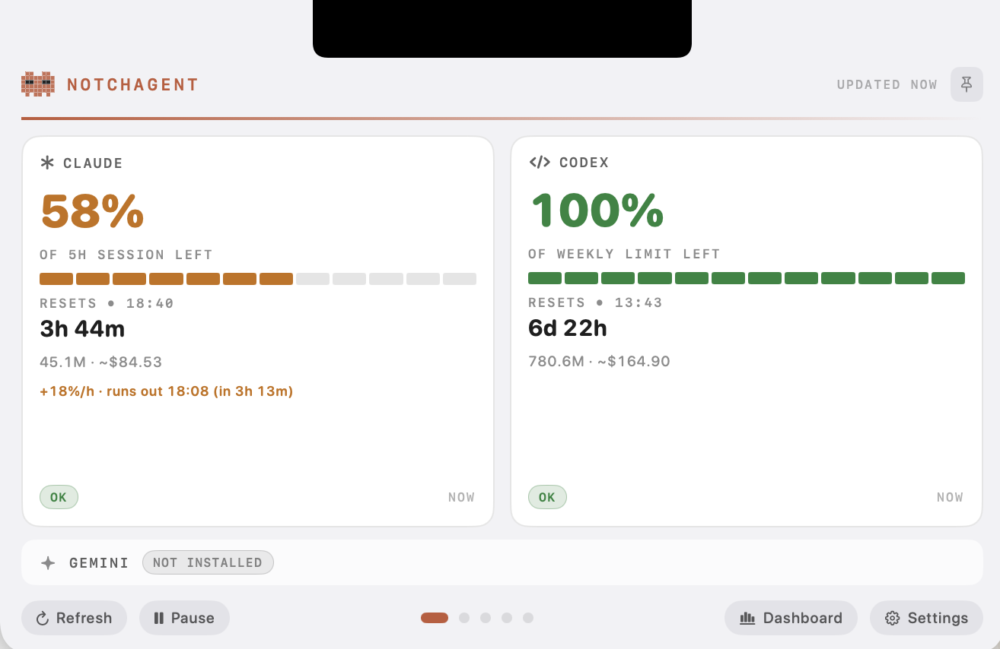
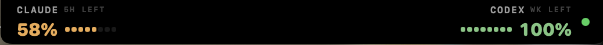
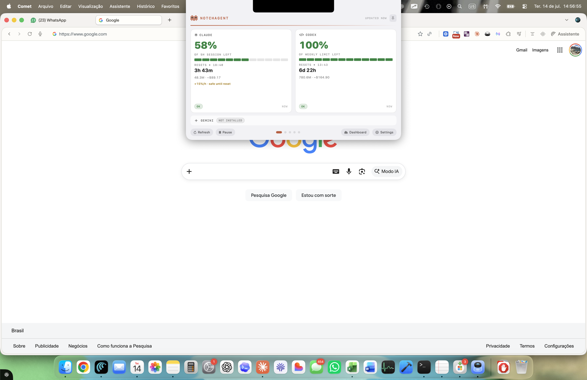
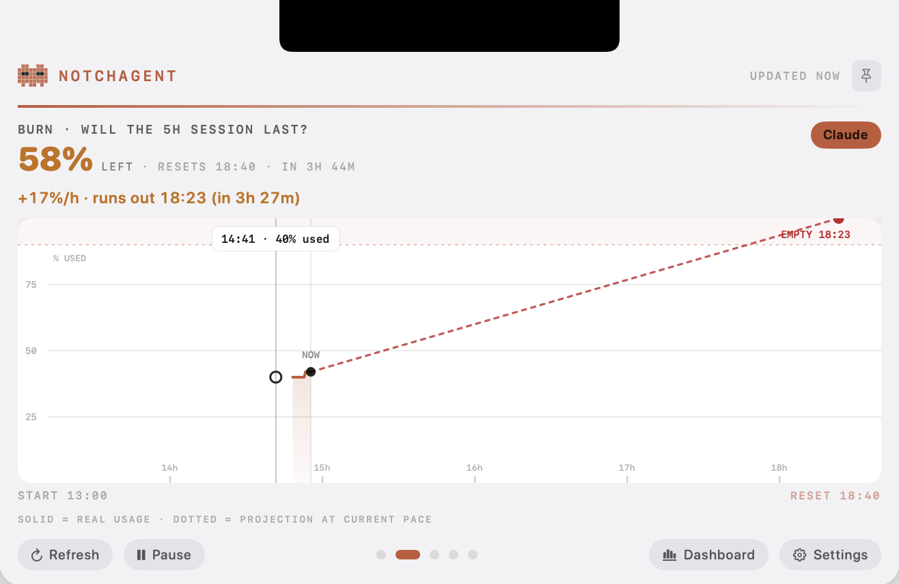
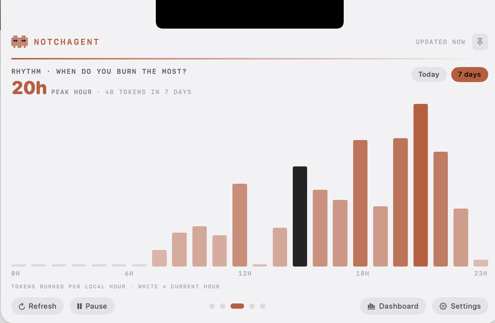
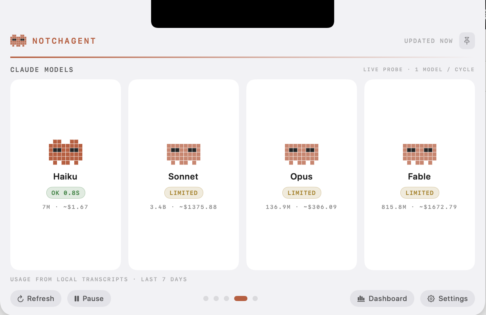
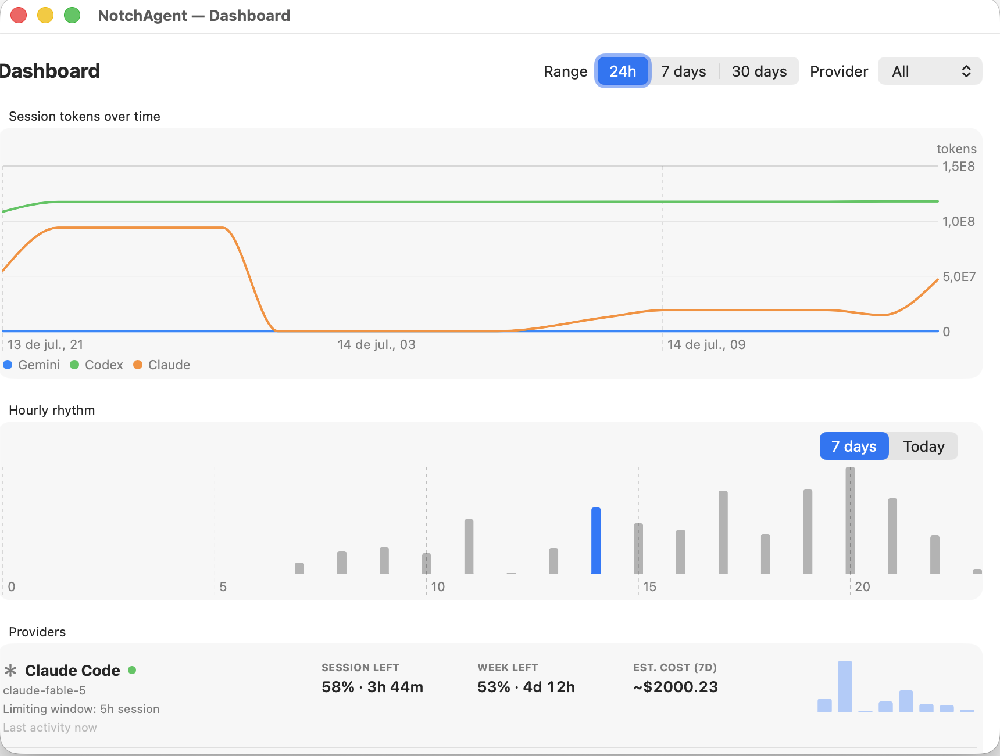

NOW01
What is left?
Provider-reported percentage, reset countdown, tokens, cost context and status.

Native Swift · Local-first · v3.0
Claude Code, Codex and API-account limits in one native Mac app — living in your notch, not another browser tab.

01 / THE SIGNAL
Stop discovering a rate limit in the middle of a build. NotchAgent keeps the remaining window, reset time, pace and health within peripheral vision.

02 / FOUR READINGS
Provider-reported percentage, reset countdown, tokens, cost context and status.

Actual use, projected pace and an explicit verdict before the current window ends.

A local hourly pattern for today or seven days, with the current hour highlighted.

Model status, response time and transcript-derived usage without pretending estimates are facts.

03 / FINANCIAL INTELLIGENCE
Monitor several accounts — even two from the same provider — while keeping fundamentally different values separate.

04 / TRUST MODEL
NotchAgent has no hosted backend and no telemetry. Credentials stay in the macOS Keychain, account sessions use isolated WebKit profiles, and exported diagnostics remove credentials, identities and financial amounts.
05 / INSTALL
NotchAgent is free and open source. Install the latest macOS build with Homebrew or inspect every line before building it yourself.
brew install --cask luisroquette/tap/notchagent
xattr -dr com.apple.quarantine /Applications/NotchAgent.app
open /Applications/NotchAgent.app